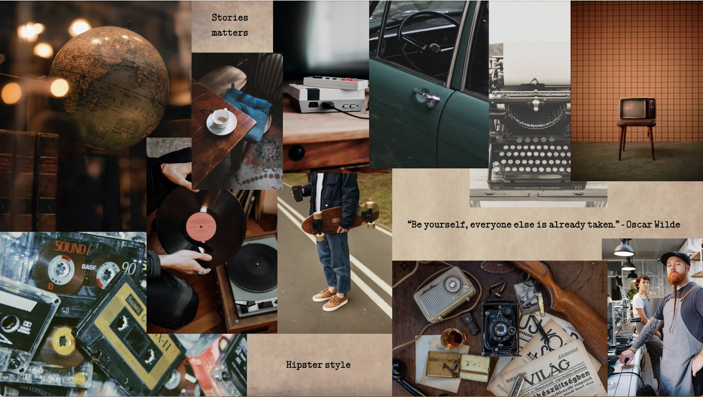
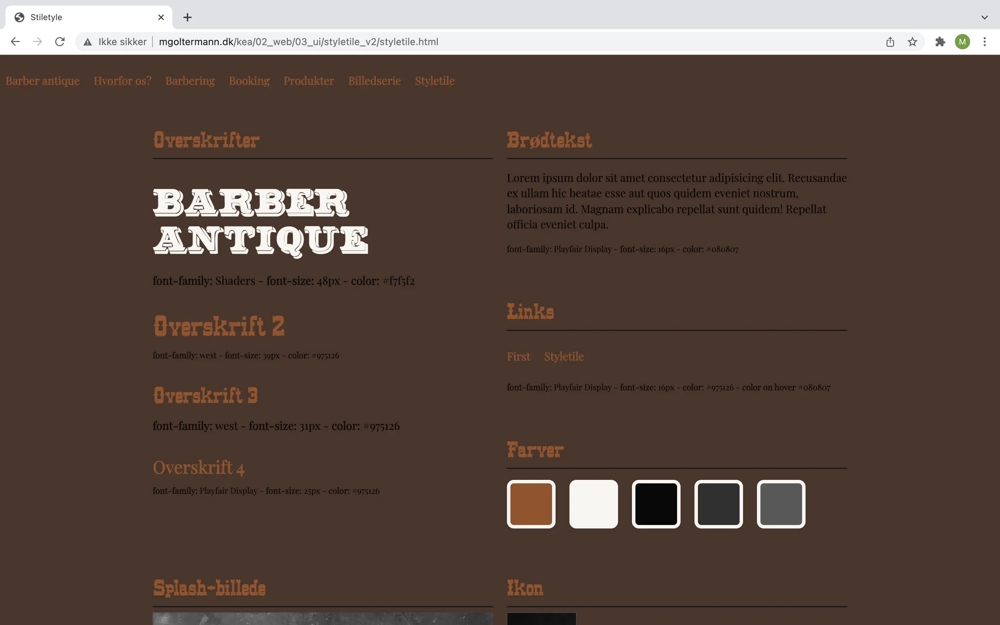
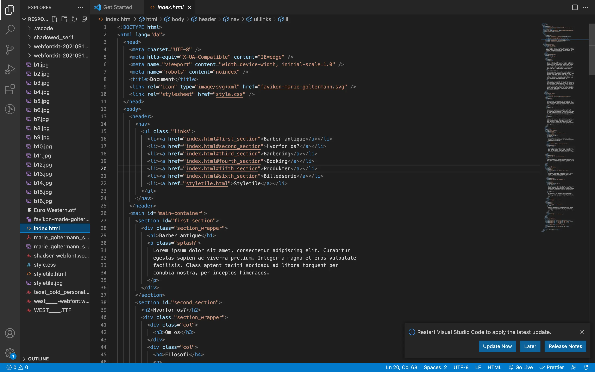
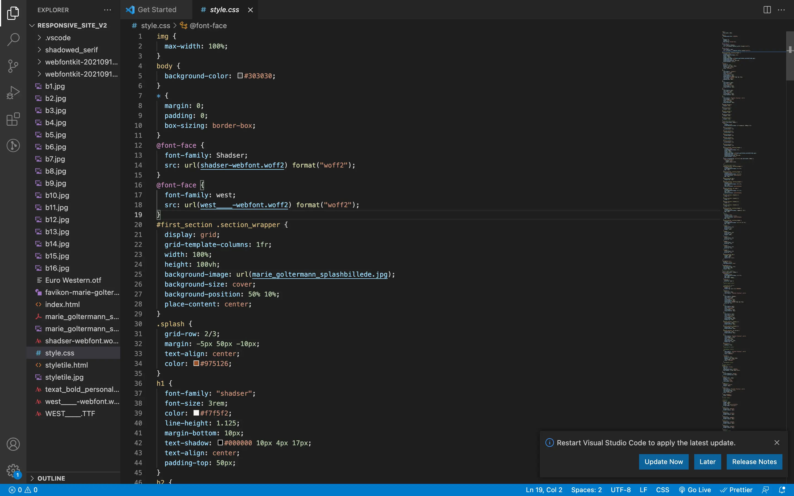
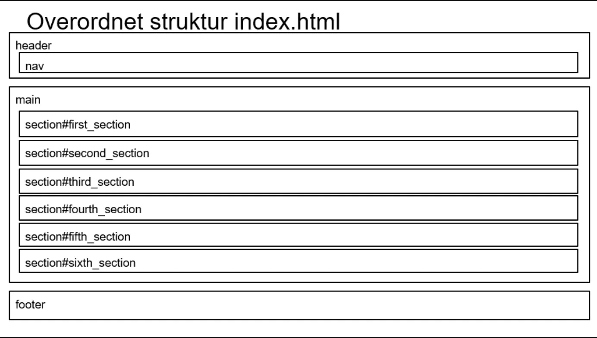
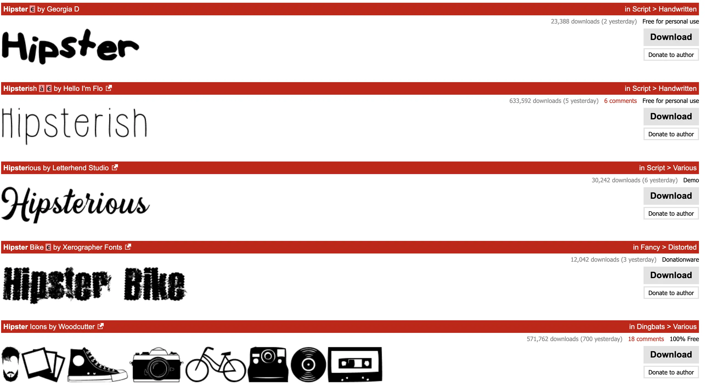

1. fase
MOODBOARD, STILARTS PITCH OG CONTENT TIL SITE
I tema to lærte vi at arbejde med research inden for en given stil.
Her udarbejdede vi en stil-pitch i PowerPoint for stilen:
Hipsterstyle. Vi arbejdede herefter med ide-generering, hvor vi
skulle lave et moodboard i Abode XD og opbygge et mock-up i Adobe XD
ud fra et udleveret wireframe.
Moodboardet brugte jeg til at breife min ide/udvælge mine
ideer ved hjælp af en samling af billeder på en side/slide. Jeg
brugte det til at beskrive stilen og tonen visuelt, som jeg ved
hjælp af research fandt frem til at være råt og tidsløst, old
school, moderne Vintage, håndværk osv. Det kan blandt andet også
beskrive en bestemt målgruppe.
Jeg brugte mit moodboard til at udfører et styletile.
Det bruges til at holde styr på stil, udtryk og danner overblik over
de forskellige stilistiske beslutninger der løbende vedtages. Et
styletile kan også bruges til at blive bevidst om et produkts
enkelte designelementer.
Vi fik udleveret et wireframe, som er en hurtig visuel
skitse eller repræsentation af den oprindelige idé eller
stedstruktur. Ud fra dette skulle vi udarbejde et mock-up er
en visuel repræsentation af den endelige output, men stadig uden
elementet funktionalitet eller interaktion (hvilket er, hvad en
prototype er til).
- Adobe XD - Adobe Photoshop -
Se opgaver
Moodboard
Styletile
mock-up af wirefram
2. fase
HTML, MOBIL, CSS, LYAOUTDIAGRAM, VALIDERING OG UPLOAD
Med overstående udgangspunkt, satte jeg en simpel
mobiludgave af min website op i HTML og layoutet den med CSS,
så den tilpassede sig en desktop efter udleveret layoutdiagram.
Derfra lærte jeg at siden skal validere efter W3C´sanvisninger og
hvordan vi uploader til eget domæne på filezilla.
Jeg lærte grundstene for HTML, som er en slags sprog
der er opbygget af regler der bruges til at lave hjemmesider på
internettet. Det er en sammensættelse af elementer som skabes ved
hjælp af åbningstags og lukningstags.
For at definere den visuelle opsætning af HTML, benyttede jeg mig af
CSS, som er et assisterende sprog til HTML og er et såkaldt
stylesheet/typografiark.
For at lave et responsivt webdesign, startede jeg med at lave
en mobilversion/mobilefirst. Dette strukturerede jeg ved
hjælp af et Layoutdiagram som er den overordnede struktur i
en index.html. Efterfølgende brugte jeg @media ”media queries” i CSS
til at style de forskellige elementer. Et eksempel på dette kunne
være at min font evt en h1, som skal vokse i takt med at vinduet
udvides.
- Adobe XD - HTML - CSS -
Se opgaver
HTML
CSS
LAYOUTDIAGRAM
3. fase
FARVER, FONTE, IKON, SPLASH OG PHOTOSHOP
Med dette på plads, var det tid til at arbejde med websiden
visuelle udtryk. Her skulle der bestemmes farver, font og
visuelle virkemidler min website skulle have. Jeg designede et ikon
og et splashbillede til min stilartsside. Her arbejde jeg i
Photoshop, hvor jeg lærte at beskære og gemme mine billeder i
forskellige formater. Udover disse praktiske færdigheder blev jeg
introduceret til grundlæggende farveteori, viden om typografi og
ikon-design. Heraf implementerede jeg disse visuelle elementer på
mit website.
Farverne er med til at fremme en bestemt stil. Derfor
undersøgte og fandt jeg frem til at modern retro webdesign,
hipstersyle, er karakteriseret ved at være råt og tidsløst, old
school, moderne Vintage, håndværk og bruger typisk den samme
farvepallete, som typiske er sort, hvid og brun, samt en enkel eller
to farver der bryder og skaber mere kontrast. Blandt andet benyttede
jeg mig af adobe color wheel for at finde den rette farvepalette.
Jeg undersøgte heraf hvilken font jeg skulle benytte
mig af. Efter research fandt jeg frem til at benytte en font ved
navn ”Shaders” og ”west”, som er i en ”western”-stil. Hvilket er
typisk stil inden for hipstersyle.
Jeg udarbejde et splashbillede til mit site i
hipstertyle-stilen i Photoshop. Med Photoshop kan du i store træk
gør alt med billeder og ved hjælp af video tutorial udarbejde jeg
mit splashbillede.
- Adobe Photoshop -
Se opgaver
{kind=link}
{kind=link}
{kind=link}
FARVER

FONT
SPLASHBILLEDE I PHOTOSHOP
Færdige produkt